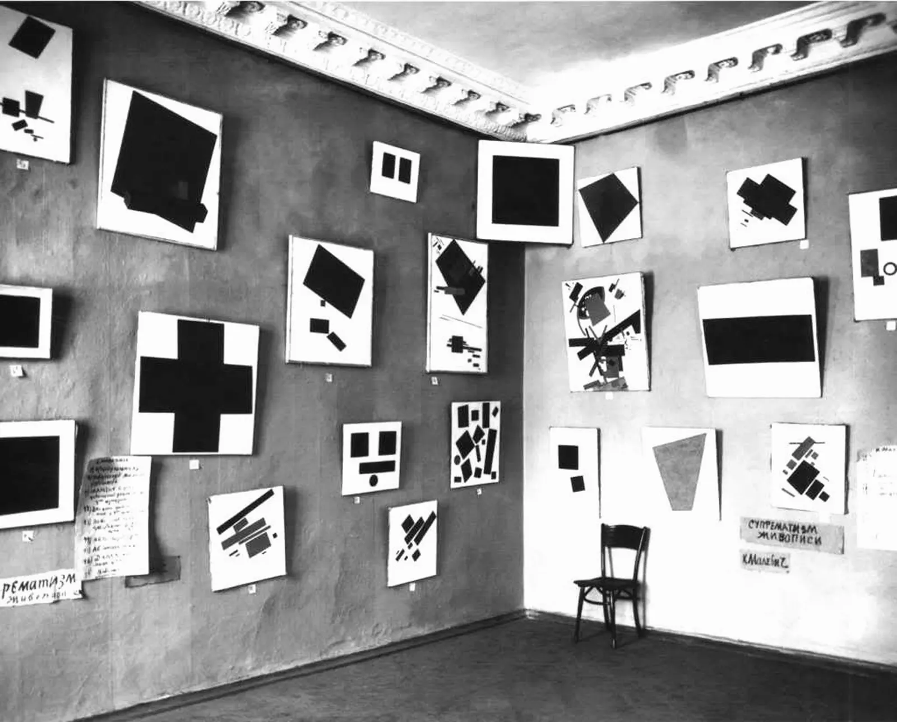
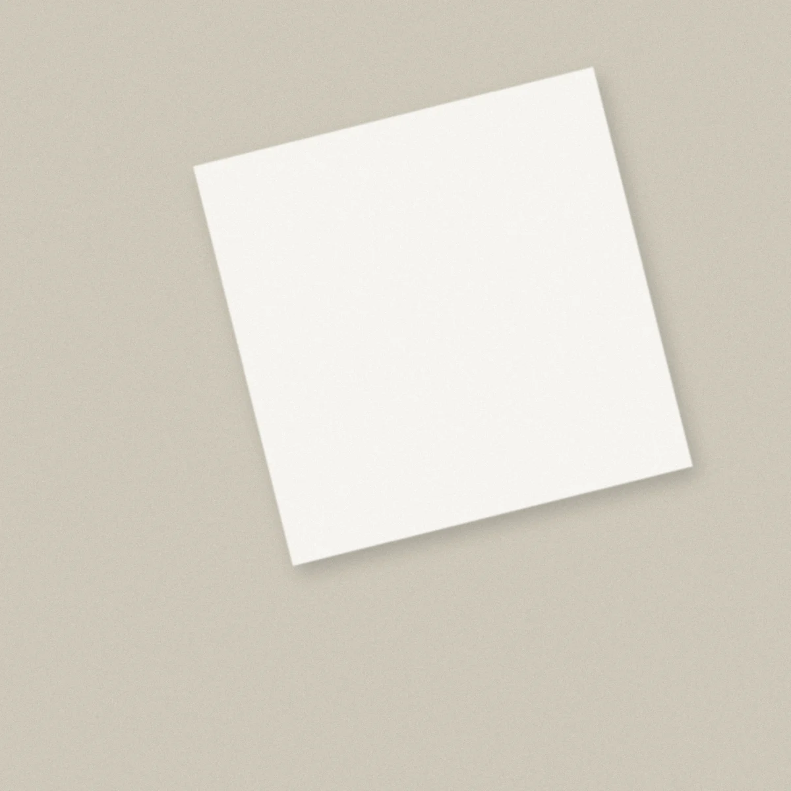
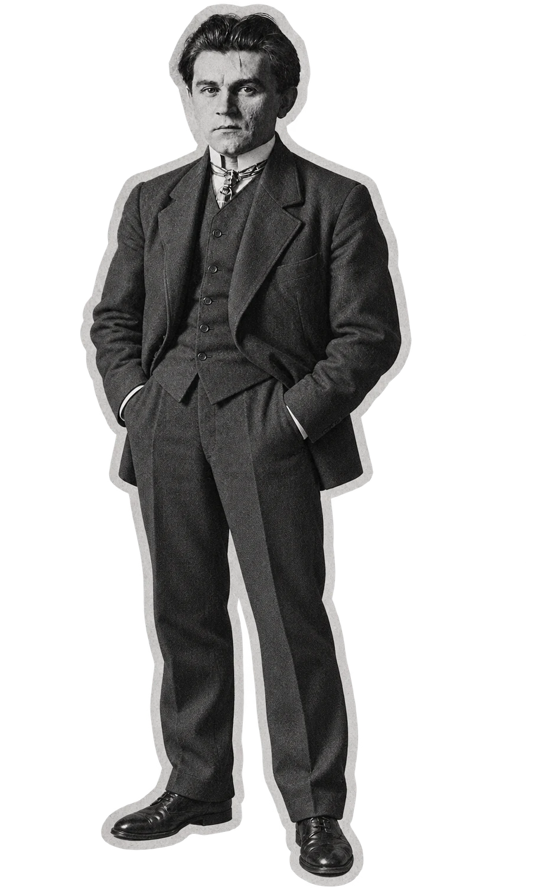
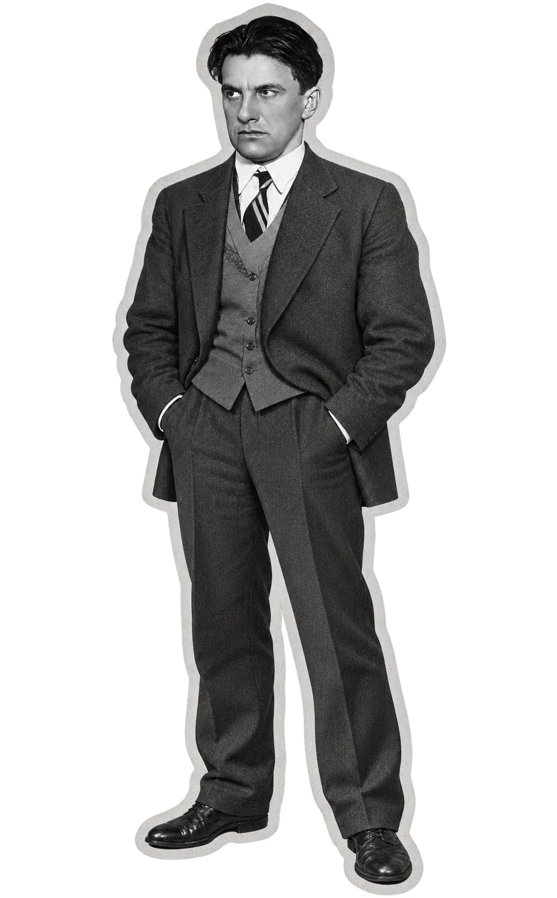

<meta charset="utf-8">
<meta name="viewport" content="width=device-width, initial-scale=1">
<title>Я (не) всегда буду против</title>
<link rel="icon" href="favicon.ico" sizes="any">
<link rel="icon" type="image/png" sizes="32x32" href="img/favicon-32.png">
<link rel="icon" type="image/png" sizes="512x512" href="img/favicon-512.png">
<link rel="apple-touch-icon" href="img/apple-touch-icon.png">
<link href="https://fonts.googleapis.com/css2?family=Manrope:wght@400;500;700;800&display=swap" rel="stylesheet">
<link rel="stylesheet" href="css/style.css?v=148">

<main>

<!-- ПЕРВЫЙ ЭКРАН: фото выставки и «Авангард» → красный экран «Авангард»: печатается, как я относилась к авангарду, затем — что он начинался с протеста →
     на красном по скроллу: «Что вы в нём видите?» и плашки → падают бумажки →
     печатается и стирается «Каждая из этих версий…» → «Я всегда буду против», вклинивается «не» -->
<section class="open1" id="first" aria-label="Начало">
  <div class="ostage">
    <div class="otrack" id="o1track">
      <div class="opanel ogrey">
        <div class="fphoto" aria-hidden="true"></div>
        <div class="oplate">
          <h1 class="ftitle">Авангард</h1>
          <p class="fsub">Я узнавала о нём раньше, чем понимала.<br class="d"> Это авторский лонгрид о том,<br class="d"> как я поняла авангард.</p>
        </div>
      </div>
      <div class="opanel ored">
        <div class="obox">
          <p class="oh" id="oh">Авангард</p>
          <div class="ost" id="os3"><p class="otype" aria-hidden="true"><span id="oty"></span><i class="caret"></i><span id="otr" class="rest"></span></p>
            <p class="sr" id="ot1">Я всегда считала, что это нечто советское и безликое… в смысле, лишённое индивидуальности. Как может выражать протест то, что принадлежит всем?</p><p class="sr" id="ot2">Но в этом я ошиблась. Так было не всегда, а вернее никогда так не было.</p><p class="sr" id="ot3">Это не мазня и не агитация. Он начинался с протеста против привычного вкуса, против власти, против церкви.</p></div>
          <div class="ost" id="os4"><p class="alw" id="alw">«Я <span class="ne" id="ne"><span>не&nbsp;</span></span>всегда буду против»</p></div>
        </div>
      </div>
    </div>
  </div>
</section>

<div id="after">

<!-- ЭКРАН: Маяковский смотрит на Пушкина так, как мы — на Маяковского -->
<section class="hsec" id="mirror" style="--n:1" aria-label="Как мы смотрим на Маяковского">
  <div class="hstage"><div class="htrack">
    <div class="hp grey"><div class="hin">
      <p class="hx big">В 1912 году <span class="hl">Маяковский</span> смотрел на Пушкина как на памятник, который надо сбросить.</p>
      <p class="hx big">Сегодня мы так же смотрим на самого Маяковского: <span class="hl">школьная программа, бронза, цитаты на плакатах</span>.</p>
    </div></div>
  </div></div>
</section>

<!-- ЭКРАН: подводка и пощёчина -->
<div class="pin" id="pin-ship">
  <div class="sc">
    <div class="sc-pre" id="sc-pre">
      <div class="pre-in" id="pre-in">
        <div class="pre-b" id="pre-b">
          <p class="pre-big" id="pre-big"><span class="f">О </span><span class="k">«Чёрном квадрате» Малевича</span><span class="f"> я узнала раньше,</span><br class="d"><span class="f"> чем </span><span class="u">поняла, что он на самом деле значит.</span><br class="d"><span class="k"> Маяковский</span><span class="f"> в школе почти </span><span class="k">терялся</span><br class="d"><span class="f"> среди других писателей.</span><br class="d"><span class="f"> Обе эти небезызвестные фигуры авангарда</span><br class="d"><span class="f"> объединяет одно: оба начинали</span><br class="d"><span class="f"> до революции с разрыва</span><br class="d"><span class="f"> со старым порядком.</span></p>
          <p class="pre-red" id="pre-red">Начнём с жеста, который знают&nbsp;все.</p>
        </div>
      </div>
    </div>
    <div class="sc-text" id="sc-text">
      <h2>Пощёчина общественному<br class="d"> вкусу</h2>
      <div class="yr">1912</div>
      <p class="rev" id="sc-p">В конце 1912 года группа молодых поэтов<br class="d"> выпускает сборник с манифестом.<br class="d"> Он называется «Пощёчина общественному<br class="d"> вкусу».<br class="m"> В нём предлагается сбросить Пушкина,<br class="d"> Достоевского и Толстого «с парохода<br class="d"> современности». Манифест подписали четверо:<br class="d"> Давид Бурлюк, Александр Крученых, Владимир<br class="d"> Маяковский и Велимир Хлебников.<br class="d m"> Это тот самый шок, который удивил<br class="d"> меня в школе.</p>
      <p class="rev srcl"><a href="https://ru.wikisource.org/wiki/%D0%9F%D0%BE%D1%89%D1%91%D1%87%D0%B8%D0%BD%D0%B0_%D0%BE%D0%B1%D1%89%D0%B5%D1%81%D1%82%D0%B2%D0%B5%D0%BD%D0%BD%D0%BE%D0%BC%D1%83_%D0%B2%D0%BA%D1%83%D1%81%D1%83" target="_blank" rel="noopener">Текст манифеста</a></p>
    </div>
    <div class="sc-art" id="sc-art" role="img" aria-label="Коллаж: бюст Пушкина и рука. Рука берёт бюст Пушкина и выбрасывает его">
      <div class="shipl" id="shipl">
        
        
      </div>
    </div>
    </div>
  </div>
</div>

<!-- КРАСНЫЙ ЭКРАН: расстояние до большинства (схема) -->
<section class="redpin rtyp" id="redpin" aria-label="Мысль">
  <div class="redsc">
    <div class="rgroup">
      <p class="rtype" id="rtype" aria-hidden="true"><span id="rty">Бросать вызов можно только тому, что все узнают: удар по неизвестному никто бы не заметил. Поэтому жест «против всех» ориентируется на то, что все уже считают ценным. Расстояние до большинства задано тем, где стоит большинство.</span><i class="caret"></i><span id="rtr" class="rest"></span></p>
      <p class="sr" id="rfull" data-d="Бросать вызов можно только тому, что все узнают: удар&#10;по неизвестному никто бы не заметил. Поэтому жест «против&#10;всех» ориентируется на то, что все уже считают&#10;ценным. Расстояние до большинства задано тем, где стоит&#10;большинство.">Бросать вызов можно только тому, что все узнают: удар по неизвестному никто бы не заметил. Поэтому жест «против всех» ориентируется на то, что все уже считают ценным. Расстояние до большинства задано тем, где стоит большинство.</p>
      <div class="rscale" id="rscale" role="img" aria-label="Схема: слева Маяковский стоит один, справа толпа — большинство. Между ними отмечено расстояние до большинства. Когда толпа сдвигается, расстояние меняется, хотя Маяковский не двигался.">
      <svg viewBox="0 -52 640 282" aria-hidden="true">
        <defs>
        </defs>
        <line class="gr" x1="8" y1="198" x2="880" y2="198"/>
        <g class="dist">
          <line id="dline" x1="170" y1="-20" x2="360" y2="-20"/>
          <line x1="170" y1="-28" x2="170" y2="-12"/>
          <line id="dtick" x1="360" y1="-28" x2="360" y2="-12"/>
        </g>
        <image class="cut" href="img/maya_head_new.png" x="8" y="-12" width="150" height="210" preserveAspectRatio="xMidYMax meet"/>
        <g id="crowd">
          <image class="cut crowdimg" href="img/crowd.webp" x="-880" y="-30" width="520" height="265" transform="scale(-1 1)" preserveAspectRatio="xMidYMax meet"/>
        </g>
      </svg>
    </div>
    </div>
  </div>
</section>

<!-- 1917: старому порядку некому отвечать (корабль, гора, Маяковский падает) -->
<section class="fallpin" id="fallpin" aria-label="1917. Старый порядок исчез">
  <div class="fallsc">
    <div class="fst" id="fst">
      <p class="ftx" id="ftx">Когда в 1917 году старый порядок<br class="d"> исчез, жесту «против» стало<br class="d"> не к кому обращаться. Новая<br class="d"> власть сама решала, что делать<br class="d"> с таким искусством.</p>
      
      <div class="fship" id="fship" role="img" aria-label="Колёсный пароход «Медный павлин» налетает на груду разбитых бюстов, человек в костюме падает с палубы">
        
        
      </div>
    </div>
  </div>
</section>


<!-- 1924: ЮБИЛЕЙНОЕ -->
<section class="jubpin" id="jub" aria-label="1924. Юбилейное">
  <div class="jsc">
    <div class="jtrack" id="jtrack">
      <div class="jp grey"><div class="jin"><h2 class="jh">Юбилейное</h2><div class="jy">1924</div><p class="js">Двенадцать лет спустя, при новой власти, Маяковский<br class="d"> пишет в 1924 году стихотворение «Юбилейное»<br class="d"> к 125-летию Пушкина. Теперь он обращается<br class="d"> к поэту лично:</p><p class="jq">«Александр&nbsp;Сергеевич,<br class="m"> разрешите<br class="d"> представиться. Маяковский».</p></div></div>
      <div class="jp grey"><div class="jin"><h2 class="jh">Юбилейное</h2><div class="jy">1924</div><p class="js">Пушкин здесь собеседник, а не груз на борту. Мумию<br class="d"> он не любит:</p><p class="jq">«Я люблю вас, но живого, а не мумию».</p></div></div>
      <div class="jp grey"><div class="jin"><h2 class="jh">Юбилейное</h2><div class="jy">1924</div><p class="js">Спорит он теперь с тем, что сделали с поэтом:</p><p class="jq">«навели хрестоматийный глянец».</p></div></div>
      <div class="jp red"><div class="jin"><p class="jr" id="jr">В 1912 году мишенью был классик<br class="d"> как образец вкуса. В&nbsp;1924-м мишень<br class="d"> сместилась на глянец, которым<br class="d"> классика покрыли. Изменился не Пушкин,<br class="d"> а то, против чего направлен жест.</p>
        <p class="srcline"><a href="https://ru.djvu.online/file/FqzuCet769uGD" target="_blank" rel="noopener">«Юбилейное», журнал «ЛЕФ», № 2, 1924</a>.</p>
        <p class="jt" id="jt" aria-hidden="true"><span id="jty"></span><i class="caret"></i><span id="jtr" class="rest"></span></p><p class="sr" id="jfull">Но в «Юбилейном» Маяковский говорит не только о Пушкине, но и о себе. От поэта новой власти ждут, что он будет прославлять революцию, а самого его гложет другое: одиночество, ревность, творческий кризис. Об этом он говорит с Пушкиным. Это открывает Маяковского для меня с другой стороны, уже не как неустанного певца революции, но как человека, который тоже… боится. Он именно боится: быть забытым и стать мумией, как Пушкин.</p></div></div>
    </div>
  </div>
</section>

<!-- НОВЫЙ ЭКРАН: Пушкин и Маяковский — живой автор и готовый памятник -->
<section class="hsec" id="twins" style="--n:3" aria-label="Пушкин и Маяковский">
  <div class="hstage"><div class="htrack">
    <div class="hp grey"><div class="hin">
      <p class="hx big">Для&nbsp;современников Пушкин тоже был новатором, как&nbsp;и&nbsp;Маяковский.</p>
    </div></div>
    <div class="hp red"><div class="hin">
      <p class="hx big">Пушкин и Маяковский похожи судьбой. Оба начинали против власти: Пушкин за вольнолюбивые стихи попал в ссылку и дружил с декабристами, Маяковский подростком сидел в Бутырской тюрьме за работу на большевиков.</p>
    </div></div>
    <div class="hp red"><div class="hin">
      <p class="hx big">Потом оба служили власти: Пушкин — на государственной службе при Николае I, Маяковский — поэтом революции. Оба погибли от пули: Пушкин на дуэли в 37 лет, Маяковский застрелился в 36.<br class="m"> Если рассматривать дуэль как элемент суицидального поведения, то оба погибли от суицида.</p>
    </div></div>
  </div></div>
</section>

<!-- МАЛЕВИЧ: пять экранов по макету (Figma, кадры 15, 16, 10, 18, 19, 20) -->
<div id="malseq">

<!-- серые кадры 15 и 16: высказывания сменяют друг друга -->
<section class="mpin mgrey" id="mgrey" aria-label="Переход к Малевичу">
  <div class="msc">
    <div class="mshade" id="mshade" aria-hidden="true"></div>
    <p class="mx" id="mg1">Логика модерна стремится сломать старый мир.<br class="d"> Если можно усомниться в Пушкине и Толстом,<br class="d"> следующим на очереди будет <span class="acc">Бог</span>.</p>
    <p class="mx" id="mg2">Малевича упрекали в том, что <span class="bq">чёрный квадрат</span> отменяет <span class="lt">всё светлое и доброе</span>.<span class="tt">Так, например, писала Татьяна Толстая в эссе о «Чёрном квадрате».</span></p>
  </div>
</section>

<!-- красный кадр 10: «Бог не скинут» -->
<!-- красный кадр 10 → серый кадр 18: горизонтальный переход внутри одной закреплённой сцены -->
<section class="mpin mhz" id="mhz" aria-label="Бог не скинут и супрематизм">
<div class="msc"><div class="mtrack">
<div class="mpanel mred" id="mred">
    <div class="mbg" aria-hidden="true"></div>
    <div class="mplate"><div class="mhead mx" id="mr1"><h2>Бог не скинут</h2><p class="yr">1922</p></div>
    <p class="mquote mx" id="mr2">«Бог – покой, покой – совершенство»</p>
    <div class="mnote mx" id="mr3">
      <p>Но в 1922 году в Витебске Малевич издаёт брошюру<br class="d"> «Бог не скинут. Искусство, церковь, фабрика». Название<br class="d"> перекликается с «сбросить с парохода». Была ли эта<br class="d"> перекличка намеренной, я не знаю.</p>
      <p class="src"><a href="https://imwerden.de/pdf/malevich_bog_ne_skinut_1922.pdf" target="_blank" rel="noopener">Текст брошюры</a></p>
    </div></div>
  </div>
<div class="mpanel msup" id="msup">
    <div class="msup-in">
      <h2 class="mx" id="ms1">Супрематизм</h2>
      <p class="sub mx" id="ms2">от латинского <span class="lat">supremus</span>, «высший»</p>
      <p class="mnote2 mx" id="ms3">Так называя своё направление, Малевич считал его высшей ступенью, когда искусству больше не нужна предметность.</p>
      <p class="mnote2 mx" id="ms4">В трактате «Супрематизм. Мир как беспредметность, или вечный покой» Малевич размышляет о Боге.</p>
      <p class="src mx" id="ms5"><a href="https://royallib.com/book/malevich_kazimir/tom_3_suprematizm_mir_kak_bespredmetnost.html" target="_blank" rel="noopener">Текст трактата</a></p>
    </div>
  </div>
</div></div>
</section>

<!-- красные кадры 19 и 20: текст печатается прямо на экране, потом остаётся вопрос -->
<section class="mpin mtype" id="mtype" aria-label="Интерпретация и вопрос">
  <div class="msc">
    <div class="ttext mx" id="mfield">
      <p class="tline" aria-hidden="true"><span id="ty">Маяковский удивил меня протестом. С «Чёрным квадратом» Малевича было иначе: в Третьяковке я только чувствовала, что стою перед легендарной картиной. Понимать её я начала на курсе истории искусств. Преподавательница рассказала про выставку «0,10» 1915 года: «Чёрный квадрат» висел там в красном углу, где в доме обычно вешали икону.</span><i class="caret"></i><span id="tr" class="rest"></span></p>
      <p class="sr" id="mfull" data-d="Маяковский удивил меня протестом. С «Чёрным квадратом»&#10;Малевича было иначе: в Третьяковке я только&#10;чувствовала, что стою перед легендарной картиной.&#10;Понимать её я начала на курсе истории искусств.&#10;Преподавательница рассказала про выставку «0,10»&#10;1915 года: «Чёрный квадрат» висел там в красном углу,&#10;где в доме обычно вешали икону.">Маяковский удивил меня протестом. С «Чёрным квадратом» Малевича было иначе: в Третьяковке я только чувствовала, что стою перед легендарной картиной. Понимать её я начала на курсе истории искусств. Преподавательница рассказала про выставку «0,10» 1915 года: «Чёрный квадрат» висел там в красном углу, где в доме обычно вешали икону.</p>
    </div>
    <p class="mq mx" id="mq">Бога нельзя скинуть:<br class="d"> он в каждой частице мира.<br class="d"> Поэтому Малевич не сбрасывает его,<br class="d"> а пишет ему новый образ — чёрный квадрат.<span class="mqn" aria-hidden="true"><span id="mpy"></span><span id="mpr" class="rest">Куратор проекта Олег Пащенко предлагает читать «Чёрный квадрат» как апофатическую икону — образ божественного мрака.</span></span></p>
    <p class="sr" id="mfull2" data-d="Меня поразила глубина и широта высказывания,&#10;которая помещена в чёрный квадрат,&#10;помещена в саму личность Малевича.">Меня поразила глубина и широта высказывания, которая помещена в чёрный квадрат, помещена в саму личность Малевича.</p>
    <p class="sr" id="mfull3">Эту связь с Богом действительно было сложно осознать, потому что совсем не сходится с представлением об авангарде как о советском и безликом: ведь советское не может быть про Бога.</p>
  </div>
</section>

</div>

<!-- ДВА ПУТИ: ЧТО ДЕЛАЛ САМ И ЧТО РЕШИЛИ ДРУГИЕ -->
<!-- ЭКРАН: поздний Малевич. Цитата с оборота картины переплывает на красный экран и становится крупной,
     внизу печатается прочтение О. Пащенко, стирается, печатается про гроб -->
<section class="lmal" id="latemal" aria-label="Поздний Малевич">
  <div class="lstage">
    <div class="lbg" aria-hidden="true"></div>
    <div class="lplate lgreyp">
      <h2 class="lh lx">Малевич художником власти не стал.</h2>
      <p class="ls lx">В конце 1920-х он вернулся к фигуре: крестьяне без лиц, люди, похожие на манекены.<br class="d"> В&nbsp;1930&nbsp;году его арестовали и несколько месяцев продержали в&nbsp;тюрьме. Ученики и друзья после этого жгли<br class="m"> то, что стало опасно хранить.</p>
    </div>
    <div class="lblack" id="lblack" aria-hidden="true"></div>
    <div class="lcol" id="lcol">
      <p class="lq" id="lq">«Композиция сложилась из элементов ощущения пустоты, одиночества, безвыходности жизни»</p>
      <p class="srcl" id="lsrc">Надпись Малевича на обороте картины «Сложное предчувствие (Торс в жёлтой рубашке)», 1928–1932. <a href="https://rusmuseumvrm.ru/data/collections/painting/19_20/zh_9477/index.php" target="_blank" rel="noopener">Русский музей</a></p>
      <p class="ltype" aria-hidden="true"><span id="lty"></span><i class="caret"></i><span id="ltr" class="rest">Куратор проекта Олег Пащенко видит в поздних работах Малевича попытку сохранить себя под давлением. Это его прочтение, но у него есть опора в самой картине: у фигуры нет лица, у дома за ней нет ни окон, ни дверей.</span></p>
    </div>
    <p class="sr" id="lt1">Куратор проекта Олег Пащенко видит в поздних работах Малевича попытку сохранить себя под давлением. Это его прочтение, но у него есть опора в самой картине: у фигуры нет лица, у дома за ней нет ни окон, ни дверей.</p><p class="sr" id="lt2">Малевич умер в 1935 году. Его похоронили в супрематическом гробу, который сделал ученик Николай Суетин.</p>
  </div>
</section>

<section id="orders">
  <!-- подводка ко второй части: кадры 29 и 30 -->
  <div class="mpin mlead" id="mlead" aria-label="Что сделал сам и что решили другие"><div class="msc">
    <div class="ml1">
      <h2 class="mx" id="ml-h">Что сделал сам и что решили другие</h2>
      <p class="mx" id="ml-p">Маяковского после смерти не только полюбили,<br class="m"> но и признали власти. Малевича — нет.</p>
    </div>
    <p class="ml2 mx" id="ml-t">К концу жизни оба были<br class="m"> в <b>глубокой депрессии.</b></p>
  </div></div>
  <div class="ords" id="ords">
   <div class="ordstage">
    <div class="pfig" id="pf-l"></div>
    <div class="pfig" id="pf-m"></div>
    <div class="ordhead" aria-hidden="true"><h3 id="hn-m">Маяковский</h3><h3 id="hn-l">Малевич</h3></div>
    <div class="otrack" id="otrack">
    <div class="opanel"><h3 class="fallh">Маяковский</h3><p class="plab">Сделал сам</p>
<div class="pane self"><ol>
        <li class="it"><div class="y">1912</div><p>Подписывает манифест «Пощёчина общественному вкусу».</p></li>
        <li class="it"><div class="y">1921</div><p>Выпускает поэму «150 000 000».</p></li>
        <li class="it"><div class="y">1924</div><p>«Юбилейное»: спорит с глянцем, которым покрыли Пушкина.</p></li>
      </ol></div></div>
    <div class="opanel"><p class="plab">Решили другие</p>
<div class="pane other"><ol>
        <li class="it"><div class="y">1921</div><div class="who">Ленин</div><p>Пишет о поэме «150 000 000»: «Как не стыдно голосовать за издание 150 000 000 Маяковского в 5000 экз.?»</p></li>
        <li class="it"><div class="y">1935</div><div class="who">Сталин</div><p>Лиля Брик жалуется, что поэта не издают. Сталин пишет Ежову: «Маяковский был и остаётся лучшим, талантливейшим поэтом нашей советской эпохи. Безразличие к его памяти и его произведениям — преступление».</p></li>
        <li class="it"><div class="y">1935–1938</div><div class="who">Государство и школа</div><p>Площади и улицы получают его имя, выходят миллионные тиражи, стихи входят в школьные и вузовские программы. Музей открывается 15 октября 1938 года.</p></li>
        <li class="it"><div class="y">1950-е</div><div class="who">Театры</div><p>Пьесы «Баня» и «Клоп» начинают широко ставить только теперь.</p></li>
      </ol></div></div>
    <div class="opanel oq"><p class="qbig qconc">Маяковский стал поэтом <br>новой власти. В&nbsp;1930&nbsp;году он застрелился, а&nbsp;в&nbsp;1935-м Сталин назвал его «лучшим, талантливейшим поэтом нашей советской эпохи». Из&nbsp;него сделали классика, <br>того самого, чьей мумии он боялся.</p>
      <p class="note"></p></div>
    <div class="opanel"><h3 class="fallh">Малевич</h3><p class="plab">Сделал сам</p>
<div class="pane self"><ol>
        <li class="it"><div class="y">1915</div><p>Показывает «Чёрный квадрат» на выставке «0,10». Картину вешают в «красном углу».</p></li>
        <li class="it"><div class="y">1919</div><p>Приезжает в Витебск, где работает до лета 1922 года.</p></li>
        <li class="it"><div class="y">1922</div><p>Выходит «Бог не скинут».</p></li>
      </ol></div></div>
    <div class="opanel"><p class="plab">Решили другие</p>
<div class="pane other"><ol>
        <li class="it"><div class="y">Декабрь 1919</div><div class="who">Заказчик</div><p>Первый крупный заказ ученикам Малевича, группе УНОВИС: оформить годовщину Комитета по борьбе с безработицей.</p></li>
        <li class="it"><div class="y">1920</div><div class="who">Город</div><p>Уновисы оформляют город к праздникам, в том числе к Первомаю.</p></li>
        <li class="it"><div class="y">7 ноября 1920</div><div class="who">Власти</div><p>Отказываются от проектов УНОВИСа по оформлению города.</p></li>
        <li class="it"><div class="y">1927</div><div class="who">Власти</div><p>Отзывают Малевича из Берлина, его картины остаются в Германии.</p></li>
        <li class="it"><div class="y">1929</div><div class="who">Третьяковская галерея</div><p>Ему устраивают ретроспективу. Взамен оставшихся в Германии работ он пишет «сорок новых полотен».</p></li>
      </ol></div></div>
    <div class="opanel oq"><p class="qbig qconc">Малевичу власть то заказывала работы, то отказывала. Он умер в&nbsp;1935&nbsp;году, и&nbsp;его картины надолго ушли из&nbsp;публичного показа.</p></div>
    </div>
   </div>
  </div>
</section>

<!-- СЛЕДУЮЩИЙ ЧИТАТЕЛЬ -->
<section id="shelf-sec">
  <div class="cstage"><div class="ctrack" id="ctrack">
    <div class="cpanel cp1"><div class="col">
      <p class="conc conc2" id="c2">Сегодня они — самые яркие символы русского авангарда, а для многих — прямая ассоциация с советской пропагандой. Так работает рекуперация: то, что было направлено против системы, система присваивает и показывает как своё.</p>
      <p class="conc conc2 ctyped" id="c3" aria-label="Пащенко"><span id="c3y"></span><span id="c3r">Куратор проекта Олег Пащенко рассказал мне историю: в школе он выбрал для чтения наизусть раннее, нереволюционное стихотворение Маяковского. Учитель не поверил, что это Маяковский: ждали поэта Ленина и партии. За такое неповиновение — тройка.</span></p>
    </div></div>
    <div class="cpanel cp1 cpm"><div class="col">
      
      <p class="conc conc2" id="c4"><span class="cred">Знакомое успокаивает, непривычное раздражает.</span><br class="d"> Широкая публика не принимает авангард,<br class="d"> потому что он непонятен: не все владеют контекстом,<br class="d"> чтобы его понять, и не все хотят им владеть.<br class="d"> Многим мешают и негативные установки:<br class="d"> авангард связывают с инструментом советской пропаганды.</p>
    </div></div>
    <div class="cpanel cp2"><div class="col">
      <p class="conc conc2 ctyped" id="ct" aria-label="Финал"><span id="cty"></span><span id="ctr">Я долго видела в «Чёрном квадрате» безликий советский знак — что-то общее, школьное, ничьё. Теперь я вижу картину, которую в 1915 году повесили в красный угол, на место иконы, чтобы спорить.&#10;&#10;Авангард перестал быть для меня безликим, когда я увидела, против чего он был и как его потом сделали своим.&#10;&#10;«Я всегда буду против» — это «всегда» у авангарда отобрали. Но я понимаю, зачем его сказали.</span></p>
    </div></div>
  </div></div>
</section>

</div><!-- /after -->
</main>

<footer class="colophon">
  <div class="col">
    <div class="fcred">
      <div><h3>Автор</h3><p class="fname">Дарина Ломухина</p></div>
      <div><h3>Куратор</h3><p class="fname">Олег Пащенко</p></div>
      <p class="fproj">Учебный проект «Я (не) всегда буду против», 2026</p>
    </div>
    <p class="fnote">Тексты написаны автором. Часть изображений сгенерирована. Часть вёрстки и изображений выполнена ИИ.</p>
  </div>
</footer>
<script src="js/main.js?v=138"></script>

